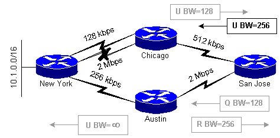

Answer the following questions:
Exercise is based on the last step of a convergence scenario, illustrated in the figure below

The update packet sent from San Jose to Chicago carries information about a better route for network 10.1.0.0/16 than the one Chicago is currently using (128 kbps link to New York). Chicago selects new successor and informs all other neighbors (New York router) that it has a better route. It also sends a poison update packet to its new successor - San Jose router, sending all together two update packets after receiving an update from San Jose.